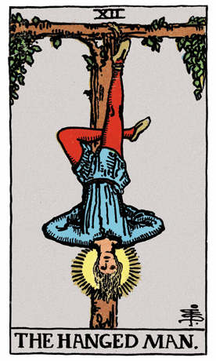

Our exploration of the Rider-Waite Tarot Deck brings us to The Hanged Man, a symbol of surrender, sacrifice, and spiritual awakening. In this card, a figure hangs upside-down from a tree, suspended by one foot. The Hanged Man's facial expression is serene, indicating a sense of peace and acceptance in the midst of apparent adversity.
The Hanged Man's posture forms the shape of the letter T, representing the cross and the concept of sacrifice. His free leg is bent to create a triangle, symbolizing spiritual awakening and the harmonious balance of opposites. The nimbus around the Hanged Man's head signifies enlightenment and divine wisdom attained through surrender.
The tree from which The Hanged Man hangs is often believed to be the Yggdrasil, the World Tree in Norse mythology, symbolizing the interconnectedness of all life and the sacrifice required for higher knowledge.
In a tarot reading, The Hanged Man often emerges as a call to surrender, let go of attachments, and embrace a different perspective. It suggests a time for self-reflection, spiritual growth, and a willingness to release control in order to gain deeper insights.
The Hanged Man challenges individuals to see challenges as opportunities for growth and transformation. The act of surrendering to the present moment allows for a shift in perception and a release of resistance, leading to spiritual enlightenment.
The triangle formed by The Hanged Man's leg signifies the integration of opposites and the balance achieved through surrender. It prompts individuals to explore the harmony that comes from embracing both the material and spiritual aspects of life.
From a psychological perspective, The Hanged Man represents the willingness to let go of ingrained patterns, attachments, and the need for control. It signifies a psychological turning point where surrender leads to greater self-awareness and transformation.
In a reversed position, The Hanged Man may indicate resistance to change, a fear of surrender, or a reluctance to release attachments. It could suggest a need for embracing different perspectives and allowing the natural flow of life to unfold. In such cases, the reversed Hanged Man serves as a gentle reminder to trust the process and surrender to the wisdom that comes from releasing resistance.
Archetypally, The Hanged Man aligns with the archetype of the Mystic or Spiritual Seeker—a figure who sacrifices worldly attachments for the sake of higher knowledge and enlightenment. The Hanged Man embodies the concept of surrendering to gain a new perspective on life.
Societally, The Hanged Man encourages communities to embrace diversity of thought, challenge established norms, and recognize the value of surrendering control for the sake of collective growth. It emphasizes the importance of spiritual insight in navigating the complexities of societal challenges.
In conclusion, The Hanged Man in the Rider-Waite Tarot Deck invites us to surrender, let go of attachments, and embrace a different perspective. It encourages individuals to release resistance, undergo spiritual awakening, and discover the profound wisdom that comes from surrendering to the flow of life.
```